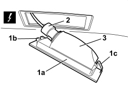
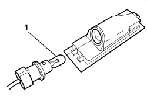

5540A94 (ONE) NUMBER PLATE LIGHT - R.R.
- Path
- Procedures > 55 ELECTRICAL EQUIPMENT > 5540 EXTERIOR LIGHTING > 5540A LIGHTING > 5540A94 (ONE) NUMBER PLATE LIGHT - R.R.
- Kind
- repair procedure (removal / refitting; the operation number is the code)
- Applies to
- all engines; all production periods
- Interactive page
- https://sloeber94.github.io/elrnDB-aBrrSpdr/en/#/946002385
Applies to: all engines; all production periods
 Removing
Removing
 Refitting
Refitting1. Release the number plate bulb (1a) releasing the retainers (1b) and (1c).
2. Remove the bulb holder.
Description | Component |
|---|---|
LEFT NO. PLATE LIGHT | |
RIGHT NO. PLATE LIGHT |
3. Recover the number plate light.

Applies to: all engines; all production periods
1. If necessary, remove the bulb from the bulb holder (press fit).

Applies to: all engines; all production periods
Refitting
Removing- Check that the numberplate light is not damaged.
- If removed, refit the bulb in the bulb holder.
- Fit the bulb holder in its seat.
- Place the number plate light in position and do up the retainers.
- Check that the numberplate lights are working.